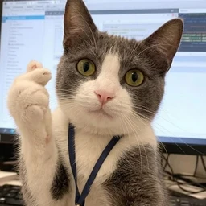
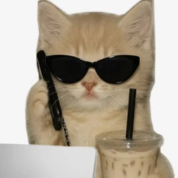
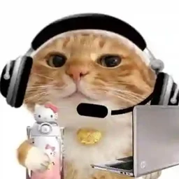
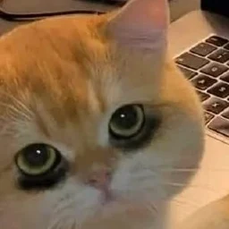
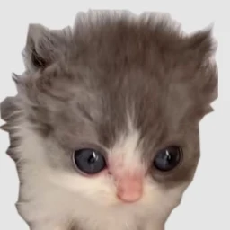

Татьяна Тыркова — руководитель спецпроектов и партнерского маркетинга
Партнерские интеграции и спецпроекты — от задачи бренда и концепции до запуска
Двенадцать проектов. Разные задачи. Один подход.
Бренды и партнеры
31 бренд в партнерских проектах и интеграциях- РОСТ
- Авито
- HONOR
- ЛизаАлерт
- BIC
- Kinder
- Кенгуру
- Мозгва
- МЕДСИ
- R.O.C.S.
- Royal Canin
- Фармстандарт
- Т-Банк
- Ozon
- Клинский
- Moriki Doriki
- Л’Этуаль
- ФрутоНяня
- ErichKrause
- BRandICE
- Abrau Junior
- Альпина Паблишер
- РОСМЭН
- Яндекс Лавка
- Яндекс KIT
- Объединенные кондитеры
- Б.Ю. Александров
- Периодика
- Security Vision
- YADRO
- Кант
Рабочие продукты с помощью AI — от идеи до запуска. Игра для партнерского проекта, CRM для ведения проектов и AI-агенты: логика, интерфейс и запуск без отдельной команды разработки.
Браузерная игра с четырьмя шагами и персональной открыткой. Запущена на лендинге back-to-school сезона.
Смотреть кейс ↗︎Рабочее пространство для партнерских проектов от брифа до Day X: готовность к запуску по направлениям, ожидания от партнера, задачи в фокусе и динамика проекта, а на рабочей доске — канбан задач по отделам, тайминг, команда и подрядчики. Используется в ежедневной работе.
Открыть демо дашборда ↗︎AI-агенты под рабочие задачи.
Веду спецпроекты и сезонные кампании от стратегии до запуска и отвечаю за результат. Нахожу концепцию под задачу бренда, согласовываю ее с партнером, собираю команду и подрядчиков, держу сроки, бюджет и качество — до дня открытия и итогового отчета.
-

Январь — ноябрь 2026Кидзания Москва
Руководитель партнерского маркетинга · холдер проектовПарк профессий для детей с партнерскими пространствами крупных брендов. Переводила задачи брендов в концепции интеграций, коммерческие предложения и планы запуска.
- Вела маркетинговый календарь Кидзании и стратегическое планирование проектов и сезонных кампаний
- Создавала новые продукты для продажи партнерам: концепция, ценностное предложение, форматы интеграций и пакеты присутствия
- Искала и вела партнеров: переговоры, презентации, согласование условий, повторные запуски
- Запускала сезонные и кросс-маркетинговые кампании, офлайн- и digital-активации
- Руководила реализацией проектов: брифы, задачи внутренним командам и подрядчикам, сроки, бюджет, качество и оценка результатов
-

Сентябрь 2023 — июнь 2025Kontr Kultura Production
Сооснователь · руководитель направления Marketing & Brand ExperienceСобственное агентство бренд-опыта и событийного маркетинга для коммерческих и государственных заказчиков. Опыт, который научил смотреть на проекты глазами бизнеса и понимать запросы партнеров.
- Разрабатывала стратегии бренд-опыта и experiential-решения для B2B- и B2G-заказчиков
- Руководила проектами полного цикла: от креативной рамки до пост-продакшена, бюджеты и риски
- Проектировала путь гостя офлайн и онлайн, оценивала проекты по охвату, NPS и вовлеченности
- Защищала концепции перед заказчиками, включая городские департаменты, и координировала подрядчиков
-

Сентябрь 2022 — сентябрь 2023CID UNESCO
Marketing & Brand Communications Manager · холдер проектовРоссийское представительство Международного совета по танцу: культурные и образовательные проекты для профессионального сообщества и широкой аудитории.
- Адаптировала глобальную бренд-платформу CID UNESCO под российский рынок
- Собрала разрозненные проекты представительства в единую бренд-архитектуру
- Развивала присутствие бренда в регионах и сообщество педагогов и коллективов
- Выстраивала точки контакта с аудиторией — от онлайн-коммуникации до отраслевых событий
-

Август 2020 — август 2022ADG group · «Место встречи»
Marketing ManagerСеть районных центров на месте бывших советских кинотеатров: торговля, досуг и место встречи соседей.
- Реализовала маркетинговую стратегию открытия 10+ районных центров
- Построила регулярный событийный календарь для возвратности жителей
- Привлекала партнеров и спонсоров, запускала ко-брендинговые активации
- Внедряла геймификацию и сенсорный маркетинг, чтобы гости оставались в центрах дольше
-

Декабрь 2016 — август 2020Музей Москвы
PR-менеджер спецпроектовРазвивала музей как площадку для брендовых и культурных событий: спецпроекты с компаниями, маркеты и фестивали.
- Привлекала и вела спецпроекты с крупными брендами и коммерческими партнерами
- Разрабатывала концепции коллабораций в fashion, IT и EdTech
- Выстраивала медиастратегию спецпроектов: СМИ, инфлюенсеры, инфоповоды
- Продюсировала фестивали и маркеты полного цикла — от концепции до пост-аналитики
- Придумала и вела коллаборацию Mercedes-Benz Fashion Week Russia с выставкой «Ткани Москвы»
Сильные стороны: партнерский маркетинг · бренд-опыт и CJM · концепции и механики · переговоры · управление проектами и бюджетом · AI-инструменты